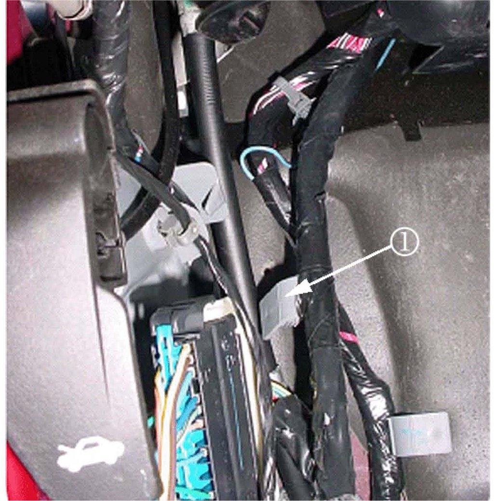

Electrical - Multiple Electrical Concerns
Bulletin No.: 07-08-49-018Date: September 07, 2007
TECHNICAL
Subject:
Various Electrical Concerns - Intermittently Functioning or Inoperative Component, IP Warning Light On, DIC Message Displayed, DTC Set, No Crank/Start (Repair IP Wiring Harness)
Models:
2007-2008 Cadillac Escalade, Escalade ESV, Escalade EXT
2007-2008 Chevrolet Avalanche, Silverado, Suburban, Tahoe
2007-2008 GMC Sierra, Yukon, Yukon Denali, Yukon XL, Yukon Denali XL
Condition
Some customers may comment on one of the driver notifications and/or effects shown above.
Not all of the effects or driver notifications listed above have been experienced. However, the different effects and driver notifications may be caused by one of the wires in the IP harness being chafed or cut. Components on different lines in the list above are in different circuits. Due to the cause of the condition, and the positions of the wires in the IP harness, it is unlikely that more than one circuit will be affected by the condition.
Upon investigation, the technician may find several DTCs set as current or in history. The technician may also find one or more blown fuses in the IP and underhood fuse blocks. The potential fuses are listed below:
60 amp MBEC1 (# 72) (Underhood)
30 amp AMP (# 40) (Underhood)
15 amp RDO (# 41) (Underhood)
10 amp IPC (# 46) (Underhood)
15 amp AIRBAG BATT (# 51) (Underhood)
10 amp DSM (Left side of IP)
Cause
The condition may be caused by one of the wires in the IP harness being chafed or cut on the parking brake pedal assembly. Five areas of potential contact have been identified and are shown.
The IP wiring branch to C202 (IP to body cam lock connection) may have been routed outboard of the junction block (left IP) and the retaining clip (1) off the branch may not have been seated. Possible point of contact (2).
The IP wiring branch to C202 may have been pushed up and forward into the park brake assembly and the retaining clip off the branch may not have been seated. Possible points of contact (1, 2).

The IP wiring branch to C202 may have never been secured into place (gray retaining clip (1) off the branch was never seated).
The IP harness may be in hard contact with the top rear edge (1) of the park brake assembly.
When releasing the park brake pedal with the park brake release lever/handle, the moving part (1) at the end of the park brake release cable may be coming into hard contact with the IP harness.
Correction
If the symptoms match those listed above, or if a condition is found with one of the circuits running to C1 or C2 of the junction block or to the inline IP-to-body connector (C202), then remove the front driver side door sill plate, driver side body hinge pillar trim panel, left IP outer trim cover and perform the following steps:
Visually inspect the IP harness for damage at the park brake pedal assembly (refer to potential damage points in photos - at the side and rear of the park brake assembly). Note that damage may be hidden from view (turned away from you, or covered by electrical tape).
Operate the park brake release lever. Is the moving part at the end of the park brake release cable coming into contact and damaging the IP harness? Inspect the IP harness at this point. Note that the damage may be hidden from view (by electrical tape).
If damage is found, repair the wiring.
Inspect how the IP branch to C202 is routed. Reroute the wiring as necessary to match the correct routing in the photo above. In order to route the IP harness branch correctly (behind the junction block-left I/P): Remove the cover from the junction block-left I/P, unseat the junction block from the bracket. Disconnect C202. Route the harness such that it lays between the goalposts of the junction block bracket. Seat the junction block to the bracket (harness will now be under the junction block). Secure the harness by seating the grey offset retaining clip to the dashmat (or brown "buddy clip" if present - usually on SUV's only). Reconnect C202.
Make sure that the grey offset retaining clip (off of the IP branch going to C202) is seated into the hole in the dashmat or into the brown buddy clip (if present), securing the IP branch to the vehicle.
If the harness is still in contact with a sharp edge or point of the park brake assembly, protect the harness by routing it away from the contact point and holding it there with tie straps, and/or covering the sharp edge with butyl tape.
Warranty Information
For vehicles repaired under warranty, use the table.

Disclaimer